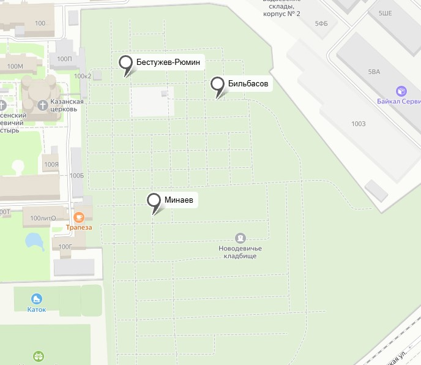

Новоде́вичье кла́дбище (уст. Ново-Девичье кладбище) — кладбище в московских Хамовниках при Новодевичьем монастыре.
Основано при Новодевичьем монастыре, построенном в 1524 году[1]. Официально возраст кладбища отсчитывается с 1904 года.
Современная территория кладбища делится на три части: старую (участки 1—4), новую (участки 5—8) и новейшую (участки 9—11).
Общая площадь кладбища превышает 7,5 га. На нём похоронено около 26 тысяч человек.
Во второй половине 1970-х годов у кладбища появился филиал — Кунцевское кладбище.
Входит в состав московского государственного бюджетного учреждения «Ритуал».

Бестужев-Рюмин Константин Николаевич, (1829 – 1897), выдающийся историк,
специалист в области древнерусского источниковедения, руководитель первых в России
Высших женских курсов. Родоначальник петербургском исторической школы. В своём
труде «Русская история», он большое внимание уделял описанию народной жизни –
материальному состоянию, культуре, верованиям, составе общества.
С 1865 по 1868 гг. в должности приват-доцента преподавал на историко-филологическом
факультете Императорского Санкт-Петербургского университета, затем с 1868 по 1884 гг.
– уже в должности профессора. Под его научным руководством трудились известные
петербургские историки – Е.Е. Замысловский, А.С. Лаппо-Данилевский, С.Ф. Платонов,
И.П. Филевич, Е.Ф. Шмурло и др.


Смоленское лютеранское кладбище (стар. Немецкое кладбище, в работе В. И. Саитова «Петербургский некрополь» называется Смоленским евангелическим кладбищем)
— лютеранское историко-мемориальное кладбище в Санкт-Петербурге, старейшее из неправославных кладбищ города (1747).
Расположено в южной части острова Декабристов (набережная реки Смоленки, 27). Название получило по реке Смоленке.
Площадь кладбища в настоящее время составляет 7,33 га.

Это введение и в нем рассказывается о кладбище.
Это введение и в нем рассказывается о кладбище.
Это введение и в нем рассказывается о кладбище.
Это введение и в нем рассказывается о кладбище.